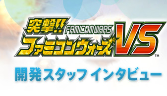
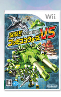
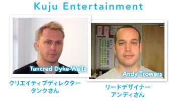
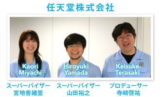
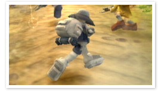

リアルタイムで変化する戦場に、陸・海・空の部隊を率いて挑む戦略ウォーアクションゲーム『突撃!! ファミコンウォーズVS』が、2008年5月15日にＷｉｉで発売されます。ゲームキューブで発売された前作に引き続きWi-Fi対戦や新ユニットの追加、Ｗｉｉリモコンとヌンチャクでのプレイなど、新要素もたっぷりです。
任天堂とイギリスにある開発会社クジュ・エンターテインメント社(Kuju Entertainment)が一緒に開発に携わったということで、今回のＮ.Ｏ.Ｍでは、京都とロンドンを電話会議システムでつなぎ、日本とイギリスのスタッフでにぎやかにインタビューに答えていただきました。



こんにちは！Kujuのタンクです。このソフトではクリエイティブディレクターを務めています。Kujuには７年在籍しています。

Kujuのアンディです。全体の企画にかかわるリードデザイナーを務めました。
寺崎です。全体の開発プロデューサーを担当しています。
任天堂の山田です。スーパーバイザーとして、ゲーム制作に関するアドバイスやクオリティの管理を担当しています。
スーパーバイザーの宮地です。去年任天堂に入社して初めての仕事が、この「突撃!!ファミコンウォーズVS」です。
まずタンクさんとアンディさんが所属するKujuという会社について教えてください。

Kujuは12年ほどのキャリアがある会社です。その中でもロンドンスタジオは戦いをテーマにしたアクションゲームが得意で、ここ数年は『突撃!!ファミコンウォーズ』シリーズを任天堂と制作していました。
Kujuさんのロンドンスタジオはテート・モダンという美術館やセント・ポール大聖堂の近くで、非常に良い環境の中でゲーム制作をしてるんですよ。

開発が始まった経緯としては、もともと戦略要素のあるアクションゲームというオリジナルのコンセプトがあり、プロトタイプを制作しました。その上で、共同して開発を進め、ゲームを発売してくれる会社を探していたのですが、そこで任天堂が私たちのオリジナリティを非常に高く評価し、興味を持ってくれたんですね。
それまで任天堂はターンベースのシミュレーションゲームはリリースしていたのですが、リアルタイムの戦略系ゲームのラインナップがなかったんですね。Kujuさんから最初に送られてきたプロトタイプを見たときに、ほかにはないという点に注目して、彼らと仕事をさせていただくことになりました。

兵士のヒョコヒョコした歩き方など、作品のノリ自体はプロトタイプから変わっていませんね。今のほうがよりコミカルにはなっていますが。海外のゲーム会社では珍しいテイストだと思いますし、私はKujuさん独自のこういったテイストを個人的にとても気に入っているんです。

ウォーシミュレーションというコンセプトでありながらライトな感覚で楽しめるゲーム、気軽に明るく遊べるゲームを目指していたんです。

欧米には戦略シミュレーションゲームは数多くあるのですが、ほとんどがリアルさを売りにしたシリアスなゲームです。そうでないものを目指したかったんですね。
ちなみにタンクさんとアンディさんは、日本で今までに発売されていた「ファミコンウォーズシリーズ」や「ゲームボーイウォーズシリーズ（※）」はプレイされたことがあるのでしょうか？

もちろん！ ゲームボーイアドバンス版の『アドバンスウォーズ』をプレイしとても楽しみました。

私たちの作品も、当初はもっとアクション要素が強かったんです。途中でもっと戦略的な要素を入れようということになったとき、「ファミコンウォーズシリーズ」はとても参考になりました。ターン制とリアルタイム制という大きな違いはあるものの、『突撃!! ファミコンウォーズVS』には、ユニットごとに細かい相性がある点やコミカルな演出など「ファミコンウォーズシリーズ」が好きだった方にも楽しんでもらえる点がたくさんあると思います。

※イギリスでは、「ゲームボーイウォーズアドバンスシリーズ」が「アドバンスウォーズシリーズ」として発売されています。